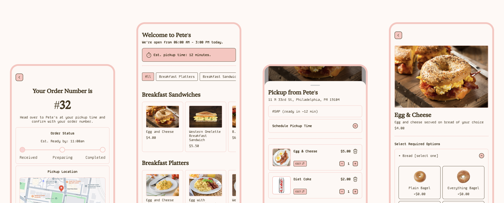
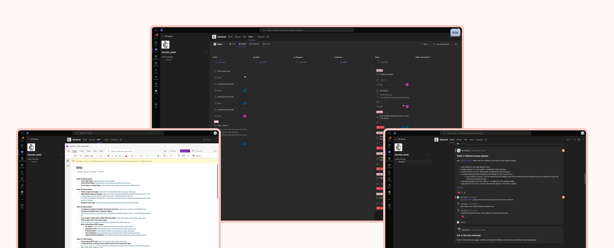
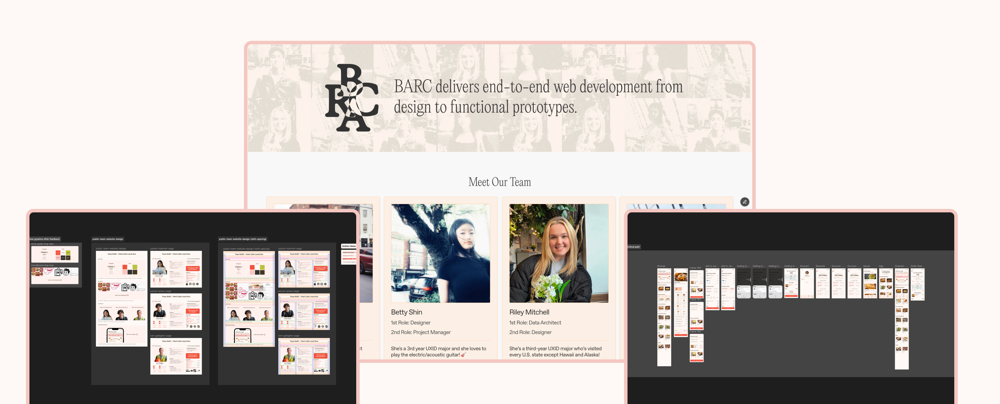
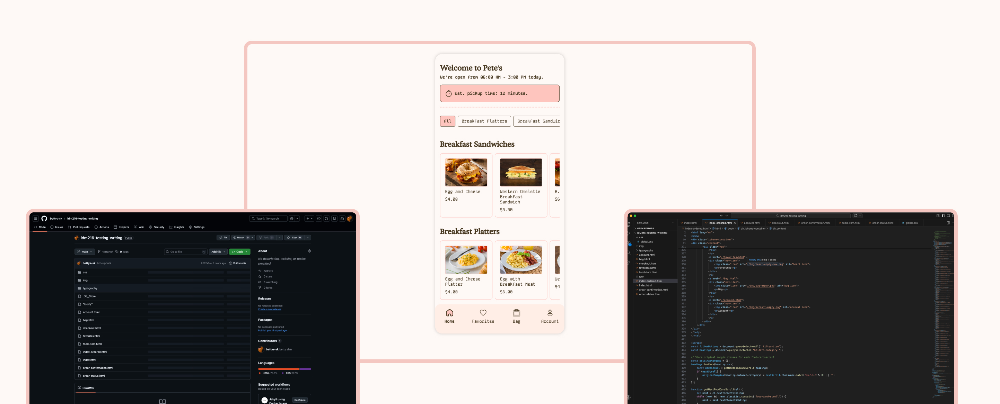
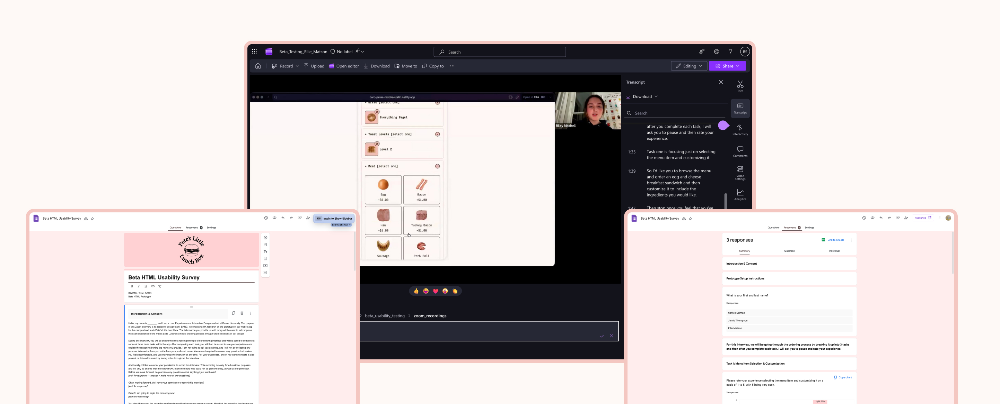

Our team, BARC, built a working food ordering web app for a campus food truck at Drexel University. The goal was to take a past UX concept and turn it into a real, coded prototype mainly using PHP.
There was no ordering app for food trucks on campus. Students had to wait in long lines with no way to check menu items or wait times ahead of time. We wanted to solve this problem by creating a simple and clear digital ordering experience.
Over three months, I worked as both Project Manager and UX Designer. I co-led the team by assigning tasks and tracking them, refined the designs, ran usability tests, and built the static frontend site using HTML, CSS, and JavaScript. The final product allows users to browse the menu, customize items, check wait times, and track their order status.
Our team was assigned to choose a UX project from a previous class and turn it into a working prototype. The project ran from January 6th to March 17th, about three months.
We were given specific roles:
I served as Project Manager and UX Designer.
Since this was a course project, we had no budget. Everything was built using school tools and free resources.
The purpose of the project was to practice working in real team roles, take ownership of tasks, and experience a real world product process while building a functional food ordering app.
There was no digital ordering system for Pete’s Little Lunch Box at Drexel. Students had to order in person and wait without knowing how long it would take.
This created:
We wanted to create a smooth and simple ordering experience that solved these issues.
Our goals were both team based and product based.
Team goals:
Product goals:
Success meant launching a working prototype on time and showing a complete ordering flow from start to finish.
This was a team project, but I had two major roles.
As Project Manager, I:

I helped keep the team organized and focused throughout the three months.
As the designer, I worked on:

I also designed a website page that introduced our team and explained our project.
After design refinement, I translated the high fidelity designs into a static website using:
The site followed the full ordering flow:
Menu → Item Customization → Cart → Checkout → Order Confirmation → Order Status Tracking

This required close teamwork with the backend developer and data architect to ensure prices, tax, totals, and user session timing worked correctly.
We conducted multiple rounds of usability testing and feedback sessions.
We tested for:
Based on feedback, we improved button placement, simplified wording, and reduced confusion during checkout.

We also went through debugging sessions to fix errors and improve performance.

The final product is a functional web based food ordering app for Pete’s Little Lunch Box, a campus food truck.
Key features include:
The experience is clean and simple. Navigation is clear. The order flow is direct and easy to follow.
Behind the scenes, the system connects frontend design with backend logic to:
The full critical flow shows a complete start to finish ordering experience.
The project was successful because:
We met both our team and product goals.
This project strengthened my ability to:
We reviewed user personas and focused on:
If I were to improve this project in the future, I would:
Thank you for reading my case study for IDM216 - Pete’s Little Lunch Box Ordering App Project!